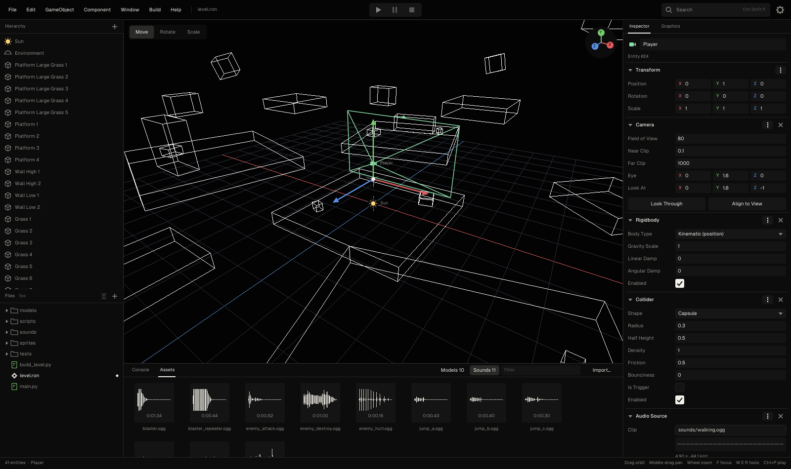

Audio
Sounds work the same way as models. Put a sound file in the project and drop it into the scene. The entity that's created plays it, and scripts can start and stop it.
| Format | Notes |
|---|---|
.ogg (Vorbis) | Recommended: small files that loop cleanly. |
.wav | Uncompressed. Good for short effects. |
.mp3, .flac | Also supported. |
Add a sound#
- Drag a sound file from your system file manager onto the scene view.
Oberon copies it into the project's
sounds/folder and creates an entity with an Audio Source where you dropped it. - Drag a sound from the Files panel or the Assets tab onto the scene view, or onto the Inspector to give it to the selected entity.
- GameObject → Sound… (or + → Create Sound… in the Hierarchy) opens a searchable list of the project's sounds. GameObject → Import Sound… picks a file anywhere on disk.
- Or select an entity and use Add Component → Audio Source, then pick a clip with Change….
Right-click a sound in the Files panel for Preview, Add to Scene and Play from <entity> (sets the selected entity's clip).
Hear it before you play#
Double-click a sound in the Files panel or the Assets tab to preview it. In the Assets tab's Sounds view, each sound shows its waveform and length, so you can find the short click among the long loops without listening to all of them.

The Audio Source#
| Row | What it does |
|---|---|
| Clip | The sound file, relative to the scene, with its length, sample rate and waveform. It turns red if the file is missing. Preview plays it; Change… picks another. |
| Volume | 1 plays it as recorded; 0.5 is quieter. |
| Pitch | Speed and pitch together: 2 is twice as fast and an octave up. |
| Loop | Start over at the end. Use it for music, engines and footsteps. |
| Play On Start | Start playing as soon as the scene runs. |
| 3D (fade) | Quieter with distance from the camera, and panned left or right. |
| Range | With 3D on: the distance in metres at which it falls silent. |
A looping sound stops when its entity is despawned, and every sound stops when you press Stop.
From scripts#
Play an entity's Audio Source:
def update(entity, ctx):
if ctx.input.just_pressed("space"):
entity.audio.play() # starts over if it's already playing
if ctx.input.just_pressed("x"):
entity.audio.stop()entity.audio.playing says whether it's playing. Footsteps are a looping
source that you start and stop as the player moves:
moving = ctx.input.axis("a", "d") != 0 or ctx.input.axis("s", "w") != 0
if moving and entity.grounded and not entity.audio.playing:
entity.audio.play()
elif not moving and entity.audio.playing:
entity.audio.stop()For one-off effects, you don't need a component. ctx.audio.play plays any
file in the project once:
ctx.audio.play("sounds/blaster.ogg") # everywhere
ctx.audio.play("sounds/enemy_hurt.ogg", position=enemy) # fades with distance
ctx.audio.play("sounds/jump_a.ogg", volume=0.6, pitch=1.2)A position can be an entity or an (x, y, z) point. Both calls work the
same in Oberon's Play mode, under run_scene, and in exported games.
From Python#
import automata as at
radio = (
at.Entity("Radio")
.add(at.Transform(position=(3, 1, 0)))
.add(at.AudioSource("sounds/music.ogg", volume=0.8, looping=True,
play_on_start=True, spatial=True, range=15))
)In the scene file it's one more component:
audio_source: Some((
clip: "sounds/music.ogg",
volume: 0.8,
pitch: 1.0,
looping: true,
play_on_start: true,
spatial: true,
range: 15.0,
)),Exporting#
Sounds are copied with the rest of the project. Build → Build Game stops with an error if an Audio Source points at a missing file, and warns about an Audio Source with no clip.
Troubleshooting#
| Symptom | Fix |
|---|---|
| Nothing plays in Oberon | Oberon plays sound through your system's default output device. If there's none (or Oberon was built with --no-default-features), sounds are silent, but scripts and entity.audio.playing still work. |
| A 3D sound is silent | The camera is further away than Range. Raise it, or turn 3D off. |
| A loop clicks at the seam | The file has silence or a jump at its ends. Trim it in an audio editor, or use .ogg. |
| Clip row red | The file moved. Change… to re-pick it. |